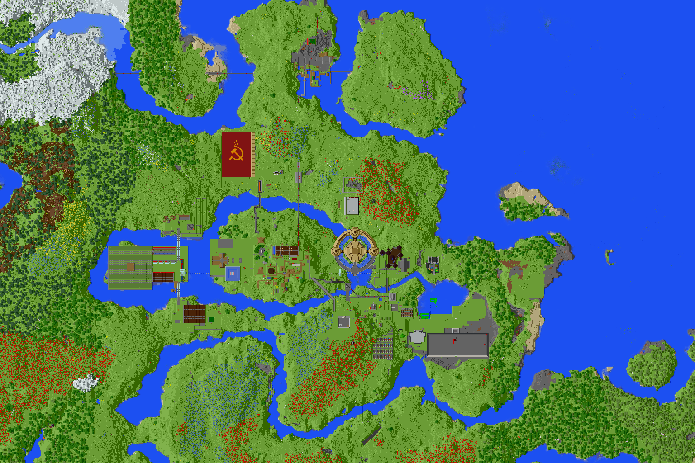

铭鑫格勒地区整体介绍
铭鑫格勒地区是服务器内最古老的地区，可以说服务器的历史就是从现在的主岛开始的，目前该地区地图如下图所示：
从西至东依次为西岛，主岛和东南自治区。
接下来会按照主岛，西岛和东南自治区的顺序分别介绍这三个地方。
主岛介绍
基础信息
主岛无论是地位上还是位置上都是服内的中央地带。主要管辖X轴从-325到-560，Z轴从-890到-1010的区域。该地区群系主要为森林和草原，但经过大规模人工平地后，该地区以成为类似草原的地形。
目前主岛居住人口1人，管理者为腐竹Cao Junkai6765
设施
主岛目前有村民交易所，农业部，刷怪塔，刷铁机等设施。
同时，服主家四周有很多物品的集中拜访处，如潜影壳，熟鱼，石头，木材等。
主岛北岸的竞技场是本地区的地标之一，另一处是服主的家。
历史沿袭
由于时间久远，本地部分历史已不可考。
未来规划
该地区目前大量空地可以开发，未来以继续发展工业和全服性功能建筑为主。
该地区不参与招新。
西岛人民公社
基础信息
西岛人民公社为服务器内最大的集团性农业区，群系大部分为森林，小部分针叶林，平原。目前该地均人工改造成为了平原地形。
该地区设施主要分布在X轴-520到-785，Z轴-800到-1000的矩形范围内。
目前该地区总人口为1人，管理者为MC8081。
设施
该地区现有设施有:小甘蔗田，两片半自动四合一农场，养蜂场，全自动甘蔗机，两台全自动南瓜机，两台全自动西瓜机等
住房方面:该地住房免费分配，双阳台，精简装修，配地下室。同时可以申请自建房 (无条件，建的稍微好看一点就行)
《工人与集体农庄女庄员》雕像为该地的地标。
历史沿袭
西岛是铭鑫格勒属下的一个地区，位于铭鑫格勒的西部、主岛的西侧。开始由服主CJK管理，建设了铭鑫格勒属农业岛，后转让给MC8081管理。
2022/08/22，西岛正式改名为西岛人民公社，是全服务器第一个以人民公社为名称的地区。后靠着一个一个五天计划逐渐完成了自动化，又扩张到了三个区，具有多种农作物的种植区域。但主要物资仍然不可自足，多数从蘑菇岛白嫖。
未来规划
中短期规划为地下室精装修，全面推进农业自动化发展，争取加入更多小型农作物种植区域。
长期规划为发展工业和建筑。
对于新人:全方面无限制招新，目前区域内建筑和工业用地面积广大，地理位置方便，无卡顿，即使无明显能力特长者，也可来参与农业生产。
西岛人民公社衷心欢迎您的到来！！！
东南自治区介绍
基础信息
东南自治区面积约为185个区块，主要管辖范围为X轴从-50到-280和Z轴从-1000到-740框成的四边形内。境内群系主要为草原群系。
目前该地人口为3人，管理者为Mosi10242601
设施
该地区主要为建筑区，所以境内设施以建筑为主。
目前建有群玉阁，小别院等，还有东南大楼正在建设中。
该地区的地标即为群玉阁。
历史沿袭
2022/05/08该地区建立
此后历史并未有可靠记载。
未来规划
该地未来目标为彻底建成东南大楼。
对于新人，该地区采取自由化措施，新人可随意定居和离开。